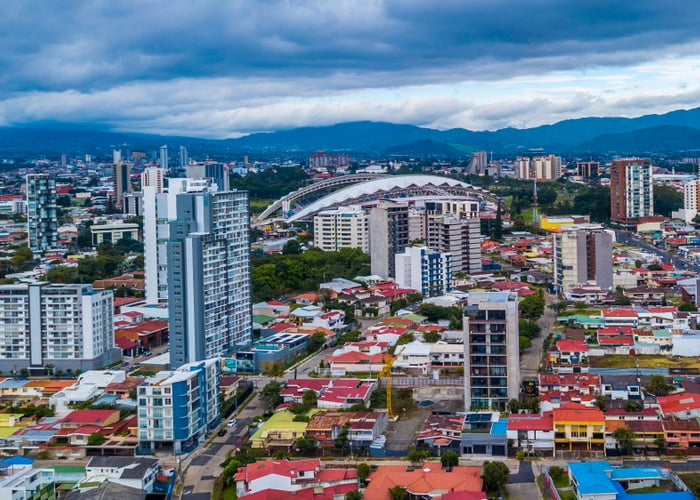

Guatemala

Guatemala, el corazón del mundo maya, es un país de contrastes donde se mezcla la historia precolombina con la
modernidad. Sus impresionantes volcanes, lagos cristalinos y bosques nubosos ofrecen una experiencia única a los
visitantes. Antigua Guatemala, una ciudad colonial con calles empedradas y edificios históricos, es uno de los
destinos más populares. Además, el Lago de Atitlán, rodeado por montañas y pueblos indígenas, es considerado uno
de los lagos más bellos del mundo.
Más sobre Guatemala
El Salvador
El Salvador, el país más pequeño de Centroamérica, ofrece una
mezcla perfecta de montañas, playas y culturas. Aunque es pequeño en tamaño,
su variedad geográfica es impresionante. Desde las olas perfectas para
surfistas en playas como El Tunco, hasta las rutas de montaña como la Ruta de
las Flores, donde se pueden visitar pueblos pintorescos y disfrutar de la
gastronomía local. La capital, San Salvador, combina lo moderno con lo
tradicional, ofreciendo tanto rascacielos como mercados locales vibrantes.
Más sobre El Salvador
Costa Rica

Costa Rica es conocida mundialmente por su enfoque en la
sostenibilidad y la protección del medio ambiente. Este país sin ejército
desde 1949, dedica gran parte de sus recursos a la conservación de la
naturaleza. Es el hogar de más del 5 % de la biodiversidad mundial, con
parques nacionales que albergan una vasta variedad de flora y fauna. Los
turistas disfrutan de actividades como el senderismo en la selva tropical, el
avistamiento de aves, y la visita a las playas del Caribe y del Pacífico.
Más sobre Costa Rica
Panamá
Panamá es famoso por su canal, una de las obras de ingeniería
más importantes del mundo, que conecta los océanos Atlántico y Pacífico. Pero
más allá del canal, Panamá ofrece una mezcla fascinante de modernidad y
tradición. La Ciudad de Panamá, con su impresionante horizonte de
rascacielos, contrasta con el Casco Viejo, el distrito histórico con calles
adoquinadas y arquitectura colonial. Además, los turistas pueden explorar las
Islas de San Blas, habitadas por los indígenas Guna Yale, o disfrutar de las
montañas y selvas tropicales de la región de Roquete.
Más sobre Panamá
Nicaragua
Nicaragua es un país centroamericano con una gran riqueza natural y cultural, conocido como “la tierra de lagos
y volcanes”. Su territorio combina paisajes impresionantes como la isla de Ometepe, formada por dos volcanes en
medio del Lago Cocibolca, y la histórica ciudad colonial de Granada, una de las más antiguas de la región.
Además, Nicaragua conserva tradiciones populares que reflejan la identidad de su gente, marcada por la
hospitalidad y el orgullo de sus raíces.
Más sobre Nicaragua
Belice
Belice es un país pequeño pero con una gran riqueza natural y cultural, ubicado en la costa del Caribe. Su
principal
atractivo es la Barrera de Coral, la segunda más grande del mundo, que ofrece paisajes marinos únicos y vida
silvestre extraordinaria. Además, Belice combina la herencia maya con influencias caribeñas y británicas, lo que
enriquece sus tradiciones, su música y su gastronomía. Su gente es reconocida por su diversidad y hospitalidad.
Más sobre Belice
Honduras
Honduras es un país centroamericano con una amplia diversidad de paisajes que incluyen playas caribeñas, selvas
tropicales y sitios arqueológicos mayas como Copán. Su costa en el mar Caribe alberga las Islas de la Bahía,
famosas
por sus arrecifes de coral ideales para el buceo. Además, Honduras conserva una fuerte herencia cultural
reflejada en
sus tradiciones, su música y la calidez de su gente.
Más sobre Honduras